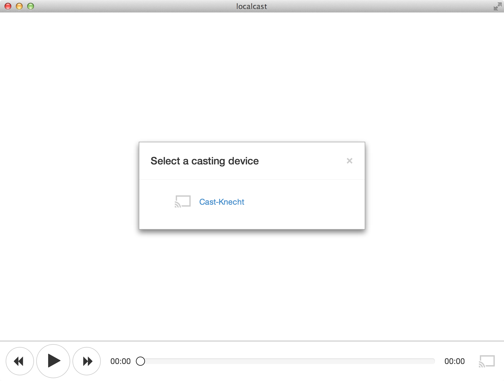

Easy streaming for videos, music and pictures to your big screen.
A simple and sleek app that will simply stream your local video, music and pictures to the big screen. We automcatically detect your Chromecast and convert otherwise incompatible videos for you.
Simply drag and drop your media files on the app and you are good to go.
Works great on your Mac, Windows (soon) or Linux PC (soon)
Feel free to help with the development. All the code is hosted on Github and is publicly accessible. Localcast is open source software
The Chromecast already supports a wide array of media formats. But every now and then you run into more exotic ones like MKV that don't play nice with it. Localcast can solve this issue for you. Make sure you have FFmpeg libary installed on your computer and it will automatically transcode your video and audio on the fly.
For live-encoding to work properly you have to install FFmpeg on your system. Get it here.
If you have FFmpeg installed on your computer Localcast supports just about any modern media format. Out of the box the Chromecast only supports the following formats:
Image formats
Video formats
Audio formats
FFmpeg is a complete, cross-platform and free solution to record, convert and stream audio and video. It provides over 100 audio and video codecs to process almost any media file. Get it here for free.
Localcast can utilize FFmpeg to automatically transcode video and audio files that we would be incompatible with the Chromecast otherwise.
Sorry, we just didn't have the time yet. However, our technology stack should be cross plattform compatible and you are encouraged to checkout the source code and compile it yourself.
We have had some early success stories with Windows, but aren't quite there just yet. Please stay tuned for a Windows releas soon.